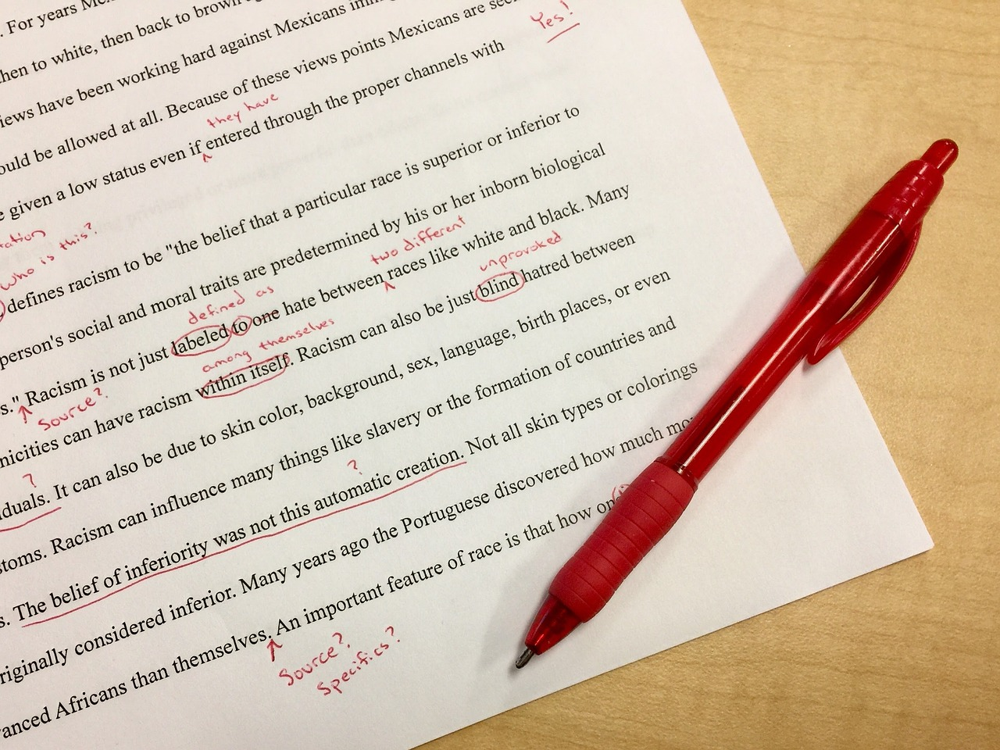

The challenge.
To create a full-stack web application for recipes using Python, Django, and Heroku.


The process.
My process involved taking time to understand and experience Python and Django. Then I set my intention to develop a clean and modern application that was available to all screen sizes and had an intuitive and simple user-flow. I was also guided and got many resources from CareerFoundry in developing this application.
The goal.
A responsive recipe application that allows different users to login, add recipes, search recipes, and see visuals of data such as a pie chart relating to different recipes. And to give me more tools and experience on my web development journey.


The original idea was to create a statistics page where users could search an ingredient and retrieve statistics and visuals of data about recipes related to that ingredient. And there would be links beneath the statistics and data visuals to click on the actual recipe.
What I realized is that when users would search an ingredient they would not be able to see the recipes related to the search without scrolling down as shown in the images above. This made the statistics page feeling less intuitive and so I chose to redesign my user flow.

I then chose to separate my statistics and recipe search functions. The statistics would have its own page while the search for recipes would be relocated on the home page. This gave the home page a little more functionality while showing users all of the recipes when they first logged in.


All objectives were achieved and met with a clean and modern design! Other challenges arose like understanding why my difficulty function was not being executed when a new recipe was entered. But after playing with models within Django and understanding how to use functions within a model I was able to have a recipe calculate its difficulty level.
I was content with the final product! Looking back there would be a couple things I would do differently:
- After deploying my project to Heroku, I learned that Heroku would not actually be the best choice to deploy my project due to Heroku not supporting the usage of static images with their free plan. This just reminded me that choosing which website to deploy your application on is crucial and making sure they fit all your needs and requirements.
- I would be a little bit more cautious when downloading dependencies. I ran into issues deploying my application due to certain dependencies clashing with others or certain dependencies needing other dependencies to be a certain version.

If I wanted to further develop and improve this application I would:
- Develop a register new user page.
- I would re-design the recipe page. To enhance the look of the page and make it more user-friendly. I would also want to organize recipes with something like protein categories or something that only takes under 10 minutes to cook. That way users could find recipes with chicken or beef, etc.
- I would give users the option to make a favorite recipes list.
Overall, this journey and exploration was very valuable in helping me to learn about the full-stack web development process using Python, Django, and Heroku. It gave more clarity in seeing how everything connects and showed me the potential in how to create a more large-scale application from the ground up.